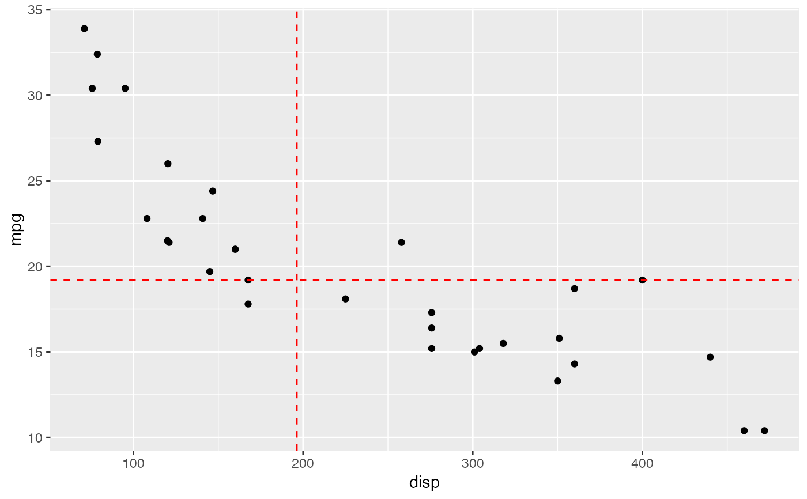
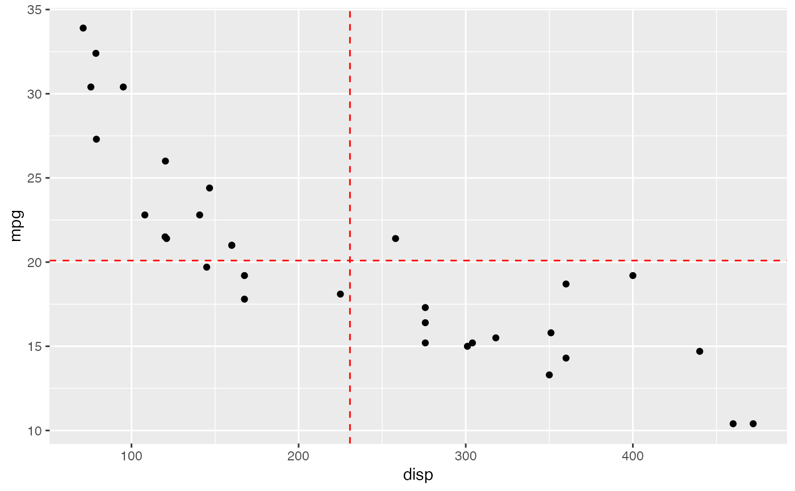

These functions plot lines representing the median or mean of the data for ggplot. From Thomas Mock (https://github.com/nflverse/nflplotR/issues/1)
median_geom(x, y, color = "red", linetype = "dashed") mean_geom(x, y, color = "red", linetype = "dashed")
| x | The X data |
|---|---|
| y | The Y data |
| color | The color of the line |
| linetype | The linetype of the line |
# }